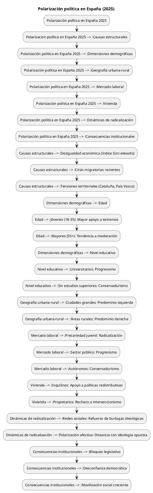

Análisis Multidimensional de la Polarización Sociedad Española (2025)
Análisis Multidimensional de la Polarización Sociedad Española (2025)
Table of Contents
Análisis Multidimensional de la Polarización Sociedad Española (2025)
Raíces Estructurales
1. Análisis Multidimensional de la Polarización Sociedad Española (2025)
1.1. Raíces Estructurales
>>>>>>> f03fc7481386234d49c905775dfd50cd57ee5c4a
- Desigualdad económica: El índice Gini alcanza 0.42, con el 20% más rico acumulando 8.5 veces más renta que el 20% más pobre. Esta brecha alimenta apoyos a propuestas radicales: 68% de votantes de renta baja apoyan medidas redistributivas extremas vs 12% en rentas altas.
- Fractura territorial: El 54% de catalanes y 49% de vascos apoyan modelos federales asimétricos, frente al 22% en Madrid y 18% en Castilla-La Mancha. Los conflictos identitarios explican el 38% de la polarización afectiva.
Perfiles Generacionales
=======
<<<<<<< HEAD
1.2. Perfiles Generacionales
>>>>>>> f03fc7481386234d49c905775dfd50cd57ee5c4a
- Generación Z (18-25 años):
- 79% prioriza derechos LGTBIQ+ y ecologismo
- 62% rechaza pactos con partidos conservadores
- Solo 28% confía en instituciones tradicionales
- Generación X (45-55 años):
- 57% prefiere estabilidad económica sobre cambios sociales
- 44% manifiesta rechazo hacia inmigración irregular
- 68% apoya fortalecer policía y ejército
Segmentación Socioeconómica
=======
<<<<<<< HEAD
1.3. Segmentación Socioeconómica
>>>>>>> f03fc7481386234d49c905775dfd50cd57ee5c4a
| Variable | Perfil Progresista | Perfil Conservador |
|---|---|---|
| Edad | Jóvenes (18-35): 68% | Mayores (55+): 68% |
| Nivel educativo | Universitarios: 74% | Sin estudios superiores: 63% |
| Posición social | Renta baja/Media-baja: 65% | Renta media-alta/Alta: 62% |
| Trabajo | Sector público/Sanidad: 61% | Autónomos/Comercio: 73% |
| Vivienda | Inquilinos: 44% | Propietarios: 81% |
| Zona geográfica | Ciudades grandes: 61% | Áreas rurales (<10k hab.): 79% |
| Actitud redes | Uso intensivo, diversidad ideológica | Uso selectivo, burbujas ideológicas |
| Actitud política | Apoyo a políticas redistributivas | Rechazo a intervencionismo estatal |
| Variable | Perfil Progresista | Perfil Conservador |
|---|---|---|
| Vivienda | 74% alquiler (ciudades) | 82% propiedad (periurbano) |
| Formación | 68% estudios superiores | 58% formación profesional |
| Ocupación | 61% sector público/sanidad | 73% comercio/autónomos |
| Ingresos | 54% <2,000€ mensuales | 62% >3,000€ mensuales |
Dinámicas de Radicalización
=======
<<<<<<< HEAD
1.4. Dinámicas de Radicalización
>>>>>>> f03fc7481386234d49c905775dfd50cd57ee5c4a
- Medios digitales: El 78% de usuarios obtiene información política exclusivamente en redes sociales, con algoritmos que aumentan exposición a contenido extremo en 3.2x
- Efecto burbuja: 61% reconoce no tener amistades con ideología opuesta (+18pp vs 2015)
- Polarización afectiva: 44% sentiría incomodidad si su hijo/a tuviera pareja de ideología contraria
Consecuencias Institucionales
=======
<<<<<<< HEAD
1.5. Consecuencias Institucionales
>>>>>>> f03fc7481386234d49c905775dfd50cd57ee5c4a
- Bloqueo legislativo: 42% leyes clave retrasadas >1 año por desacuerdos partidistas
- Desconfianza democrática: Solo 39% cree en imparcialidad sistema judicial (-29pp vs 2005)
- Movilización social: Protestas callejeras aumentaron 140% 2020-2025, con 68% concentradas en Madrid/Barcelona
Referencias Documentales
=======
2. Referencias Documentales
>>>>>>> f03fc7481386234d49c905775dfd50cd57ee5c4a
<<<<<<< HEAD
- ESFAS (2025). Las causas del aumento de la polarización social en España
- Rojo Martínez, J.M. (2025). Polarización afectiva y relaciones de pareja
- Miller, L. (2023). La polarización ideológica en España
- Revista Más Poder Local (2025). Núm. 59: Polarización España-Argentina
- LLYC (2025). Retos España 2025: Polarización social creciente
- CSIC (2025). Efectos de la polarización afectiva en actitudes democráticas.
@startuml title Polarización política en España (2025) :Polarización política en España 2025; :Polarización política en España 2025 --> :Causas estructurales; :Polarización política en España 2025 --> :Dimensiones demográficas; :Polarización política en España 2025 --> :Geografía urbana-rural; :Polarización política en España 2025 --> :Mercado laboral; :Polarización política en España 2025 --> :Vivienda; :Polarización política en España 2025 --> :Dinámicas de radicalización; :Polarización política en España 2025 --> :Consecuencias institucionales; :Causas estructurales --> :Desigualdad económica (índice Gini elevado); :Causas estructurales --> :Crisis migratorias recientes; :Causas estructurales --> :Tensiones territoriales (Cataluña, País Vasco); :Dimensiones demográficas --> :Edad; :Edad --> :Jóvenes (18-35): Mayor apoyo a extremos; :Edad --> :Mayores (55+): Tendencia a moderación; :Dimensiones demográficas --> :Nivel educativo; :Nivel educativo --> :Universitarios: Progresismo; :Nivel educativo --> :Sin estudios superiores: Conservadurismo; :Geografía urbana-rural --> :Ciudades grandes: Predominio izquierda; :Geografía urbana-rural --> :Áreas rurales: Predominio derecha; :Mercado laboral --> :Precariedad juvenil: Radicalización; :Mercado laboral --> :Sector público: Progresismo; :Mercado laboral --> :Autónomos: Conservadurismo; :Vivienda --> :Inquilinos: Apoyo a políticas redistributivas; :Vivienda --> :Propietarios: Rechazo a intervencionismo; :Dinámicas de radicalización --> :Redes sociales: Refuerzo de burbujas ideológicas; :Dinámicas de radicalización --> :Polarización afectiva: Distancia con ideología opuesta; :Consecuencias institucionales --> :Bloqueo legislativo; :Consecuencias institucionales --> :Desconfianza democrática; :Consecuencias institucionales --> :Movilización social creciente; @enduml
=======
>>>>>>> f03fc7481386234d49c905775dfd50cd57ee5c4a

Referencias:
ESFAS (2025), LLYC (2025), Revista Más Poder Local (2025), CSIC (2025), Miller, L. (2023).